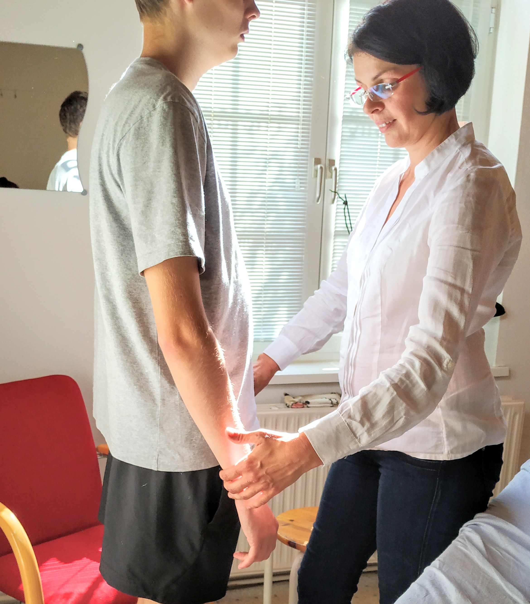

Kinesiologie

Kinesiologie ist eine sanfte Methode, die Blockaden von unbewussten, emotionalen Konflikten,
körperlichen Symptomen und/oder körperlichen Beschwerden lösen kann. Über das persönliche
Gespräch und den Muskeltest an den beiden Armen werden im Dialog innere Blockaden sanft gelöst
und Klarheit entsteht. Jede Zelle unseres Körpers und auch jeder Muskel reagiert auf unsere
Gefühle, unsere Gedanken. Der häufigste Grund, warum Blockade sich manifestiert, daß wir zum
Zeitpunkt des Konfliktes nicht in der Lage waren, eine Wahl/Entscheidung zu treffen. Wir konnten
unsere Gefühle nicht empfinden und oder ausdrücken. Der Muskeltest ermöglicht den direkten
Zugang zum Unterbewussten und den Körpersystem. Der Körper weiß am besten, was ihn stärkt, da
alle von uns gemachten Erfahrungen im Nervensystem und im Zellgächtnis gespeichert sind. Wir
haben alle Atworten in uns. Jeder von uns besitzt inneres Wissen, innere Heilungs-Instanz.
Es kann gestärkt werden:
Selbstwertgefühl, Kraft, Achtsamkeit, Selbstliebe, Freude, Dankbarkeit, Mut, Klarheit, Selstentfaltung, Wille, Wahrheit, Gabe, Harmonie, Selbstbestimmung, Selbstbewusstsein, Verantwortung, Lebensziel, Handeln, Ichstärke, Glückseligkeit.
Es kann gelöst werden:
Angst, Stressaktionen, Zweifel, Lernblockaden, Ablehnung, Einsamkeit, Gefühlslosigkeit, Sinnlosigkeit, Wut, Zorn, Ärger, Scham, innere Blockaden, alte Muster.
Es kann gestärkt werden:
Selbstwertgefühl, Kraft, Achtsamkeit, Selbstliebe, Freude, Dankbarkeit, Mut, Klarheit, Selstentfaltung, Wille, Wahrheit, Gabe, Harmonie, Selbstbestimmung, Selbstbewusstsein, Verantwortung, Lebensziel, Handeln, Ichstärke, Glückseligkeit.
Es kann gelöst werden:
Angst, Stressaktionen, Zweifel, Lernblockaden, Ablehnung, Einsamkeit, Gefühlslosigkeit, Sinnlosigkeit, Wut, Zorn, Ärger, Scham, innere Blockaden, alte Muster.